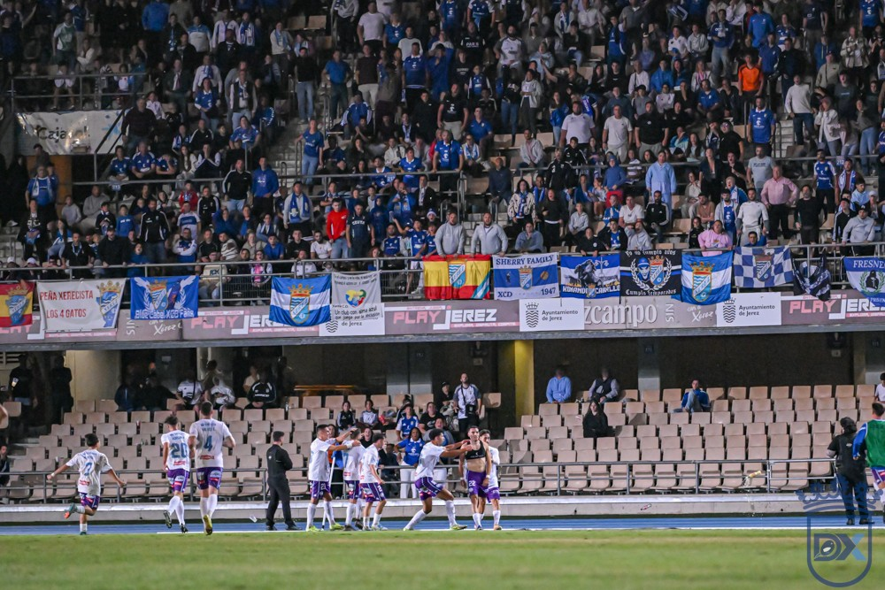

Multa de 600 euros al Xerez y apercibimiento de cierre parcial del Fondo Sur por los incidentes en el gol del Lucena

Foto: Diario XerecistaEl Comité de Competición ha impuesto al Xerez CD una multa de 600 euros y un apercibimiento de cierre parcial del Fondo Sur por los incidentes registrados tras el gol del Ciudad de Lucena en Chapín, el pasado domingo 18 de octubre.
Los hechos se produjeron en el minuto 89 del partido de la séptima jornada, cuando Sergio García marcó el 0-1 que dio la victoria al Ciudad de Lucena. Según recoge el acta del encuentro, en ese momento se lanzaron botellas y mecheros desde la grada.
Un aviso antes del derbi
El apercibimiento supone que, si se repiten incidentes similares, el club podría ser sancionado con el cierre parcial del Fondo Sur. La sanción llega a una semana del partido de Copa del Rey ante el Cádiz CF, que se disputará el miércoles 28 de octubre a las 21:00 horas en Chapín y que ha sido declarado de alto riesgo por las autoridades competentes.
🇬🇧 Read in English ← Volver a la portada